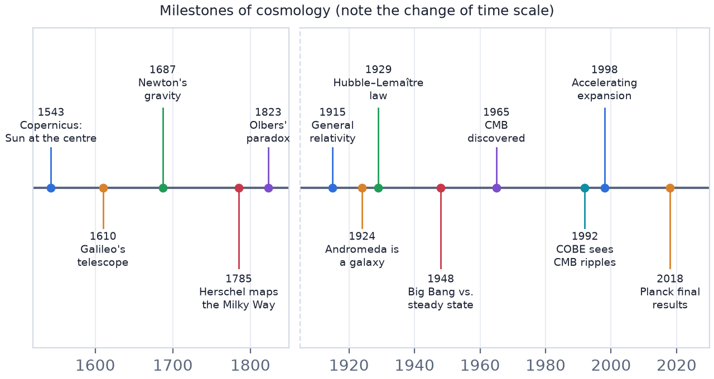

In this lesson you will learn
|
Why history matters
The ideas in this course were not obvious. Each was fought for, tested against observations and often resisted. Seeing how we came to know what we know helps separate solid results from open questions, and shows that science advances by improving its measurements.

The ancient cosmos
Early civilisations such as the Babylonians and Egyptians kept careful records of the sky for calendars and agriculture. Greek philosophers were the first to build geometric models that tried to explain the motions they saw.
- Aristotle (4th century BCE) described a spherical Earth at the centre of nested crystalline spheres carrying the Moon, Sun, planets and stars. This geocentric model matched everyday experience: the ground does not seem to move.
- Eratosthenes (around 240 BCE) measured the circumference of the Earth by comparing the Sun's angle in two Egyptian cities, getting a remarkably good answer.
- Aristarchus of Samos (3rd century BCE) proposed that the Earth orbits the Sun, but the idea found few followers. One strong objection: if the Earth moved, nearby stars should show parallax, and none was seen. (The shift exists, but is far too small to detect with the naked eye.)
Ptolemy's epicycles Planets sometimes appear to move backwards across the sky (retrograde motion). Around 150 CE Claudius Ptolemy explained this in his Almagest with epicycles: each planet moves on a small circle whose centre moves on a larger circle around the Earth. The model predicted planetary positions well enough to be used for about 1 400 years. |
Astronomy in the medieval Islamic world
While Europe preserved little of Greek astronomy, scholars from Baghdad to Samarkand translated, tested and improved it.
- al-Battani (around 900) measured the length of the year and the tilt of the Earth's axis more accurately than Ptolemy.
- Nasir al-Din al-Tusi, who founded the Maragha observatory in 1259, invented the Tusi couple: a clever combination of two circles that produces straight-line motion. Later Ibn al-Shatir in Damascus built planetary models that are mathematically very similar to those Copernicus would use.
- In Samarkand, Ulugh Beg's observatory produced a catalogue of more than 1 000 stars in the 1430s. His colleague Ali Qushji later worked in Istanbul and argued that astronomy should not depend on Aristotle's philosophy.
Observations drive progress Better instruments exposed small errors in the old models. Every step towards the modern picture began with someone taking the data more seriously than the accepted theory. |
The Copernican revolution
In 1543 Nicolaus Copernicus published On the Revolutions of the Heavenly Spheres, placing the Sun at the centre: the heliocentric model. Retrograde motion became a simple effect of the faster-moving Earth overtaking the outer planets.
The new picture was confirmed step by step:
- Tycho Brahe made the most precise naked-eye measurements ever. A new star in 1572 and a comet in 1577 showed that the heavens are not unchanging.
- Johannes Kepler used Tycho's data to discover that planets move on ellipses, not circles, sweeping out equal areas in equal times (1609–1619).
- Galileo Galilei turned a telescope to the sky in 1609–1610. He saw moons orbiting Jupiter, the phases of Venus and countless stars in the Milky Way.
- Isaac Newton explained all of this in 1687 with one law of gravity valid on Earth and in the heavens (lesson L0.4).
From the Solar System to galaxies
With the Sun at the centre of the Solar System, the next question was the structure of the stars.
- In 1755 Immanuel Kant suggested that faint nebulae might be distant "island universes", systems of stars like our own.
- William Herschel counted stars in different directions (1785) and mapped the Milky Way as a flattened disk.
- In the 1920 Great Debate, Harlow Shapley argued that spiral nebulae lie inside a very large Milky Way, while Heber Curtis argued they are separate galaxies. Edwin Hubble settled the question in 1924: Cepheid variables showed the Andromeda nebula lies far outside the Milky Way (lesson L1.1).
The expanding universe
The 20th century changed cosmology from philosophy into physics.
- 1915–1917: Einstein's general relativity. Einstein assumed a static universe and added a cosmological constant to keep it still.
- 1922: Alexander Friedmann showed that relativity naturally allows an expanding or contracting universe.
- 1927: Georges Lemaître proposed an expanding universe and linked it to the redshifts of galaxies. In 1931 he suggested it began from a "primeval atom".
- 1929: Hubble published the velocity–distance relation (lesson L1.2).
Try it: Hubble Diagram Fitter Fit Hubble's original 1929 data yourself and see why his result surprised everyone. |
Big Bang versus steady state
Two rival theories competed for two decades:
- The Big Bang model: the universe was once hot and dense and has been expanding and cooling ever since. In 1948 George Gamow, Ralph Alpher and Robert Herman showed it could make helium, and predicted a leftover glow of radiation a few kelvin above absolute zero.
- The steady state theory (1948) of Hermann Bondi, Thomas Gold and Fred Hoyle: the universe expands but looks the same at all times, because new matter is continuously created. It has no beginning.
Naming the Big Bang Fred Hoyle, the steady state theory's strongest defender, coined the phrase "Big Bang" in a 1949 BBC radio broadcast. The name stuck, though the image of an explosion at a point is misleading (lesson L1.3). |
Observations decided the contest. In the 1960s counts of radio galaxies and quasars showed that the distant, early universe looked different from today. Then in 1965 the predicted relic radiation, the cosmic microwave background, was found (lesson L1.5). The steady state theory could not explain it naturally.
Precision cosmology
Since the 1990s, cosmology has become a precise, data-driven science:
- 1992: the COBE satellite detects tiny ripples in the CMB.
- 1998: supernovae reveal that the expansion is accelerating.
- 2000s–2010s: WMAP and Planck measure the universe's contents to about 1%.
- 2015: gravitational waves are detected directly.
- 2020s: the James Webb Space Telescope observes galaxies formed only a few hundred million years after the Big Bang, and large surveys map tens of millions of galaxies.
Remember this
|